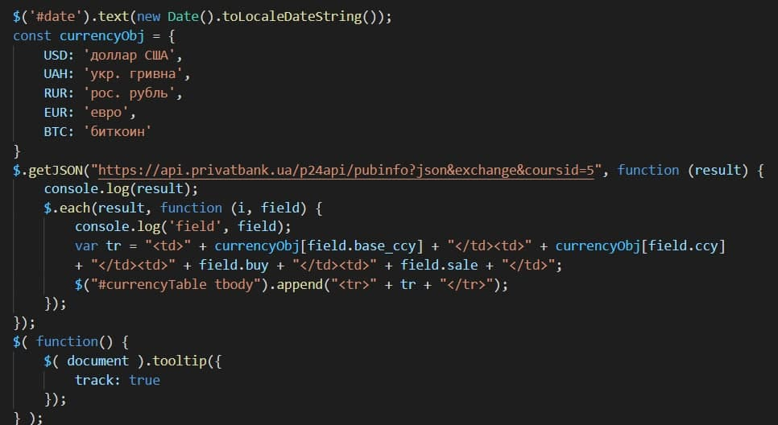

Для виконання лабораторної роботи було обрано додати три види інформерів: Погоду у Києві, Курс валют за ПриватБанком та годинник.
Пункт 1. Погода у Києві.
Вигляд на сайті
Програмний код
Пункт 2. Курс валют за ПриватБанком.
Вигляд на сайті
Програмний код

Пункт 3. Годинник.
Вигляд на сайті
Програмний код